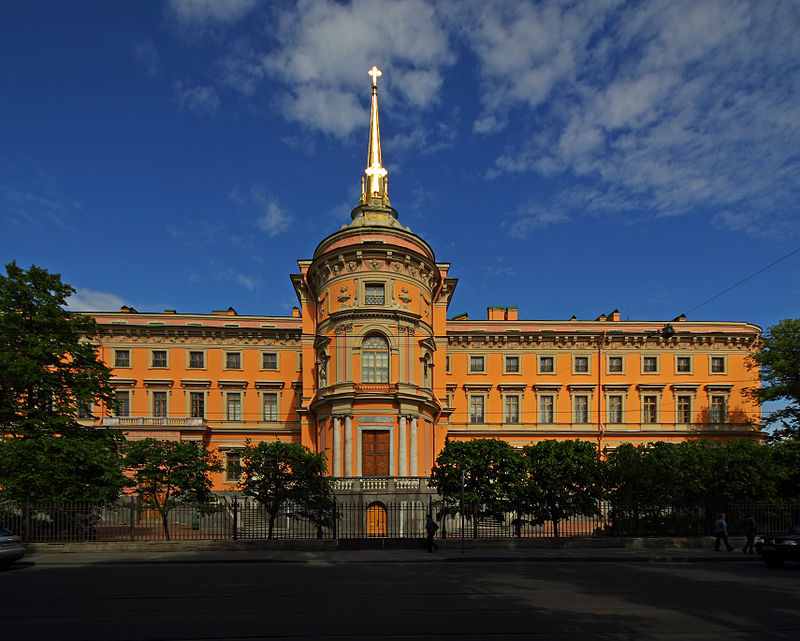
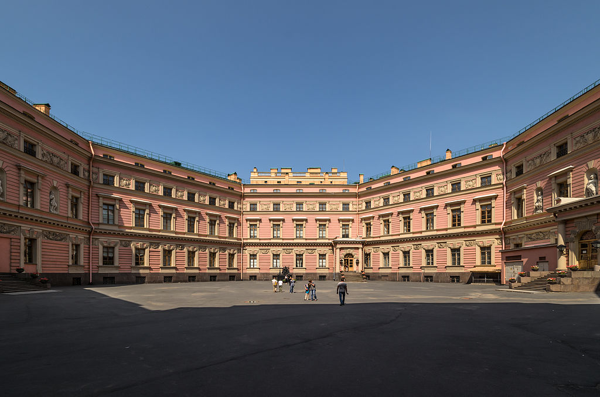
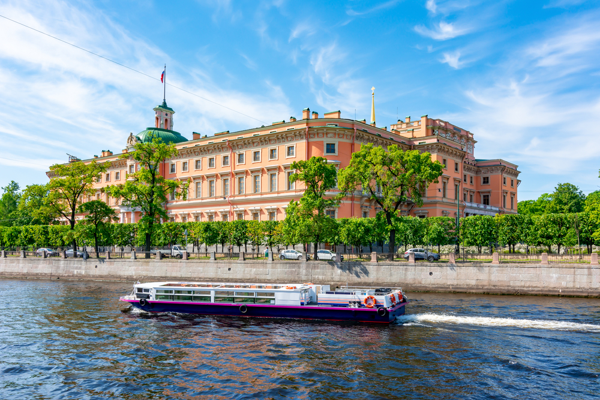
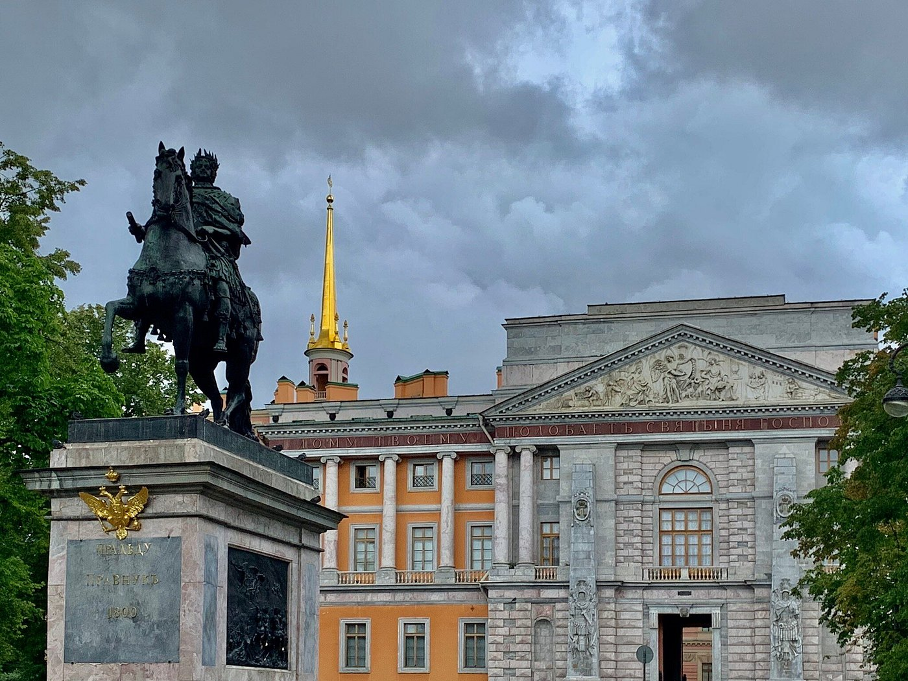

Михайловский замок

Легенда
Говорят, что по коридорам замка до сих пор бродит призрак императора Павла I с горящей свечой в руках. Считается, что император предчувствовал свою смерть. За несколько дней до убийства он якобы увидел в зеркале собственное отражение со свернутой шеей.

Также существует легенда о цифрах: гадалка предсказала Павлу, что он проживет столько лет, сколько букв в надписи над Воскресенскими воротами замка («Дому твоему подобает святыня господня в долготу дней»). В надписи 47 букв — на 47-м году жизни император был убит.

Что было на самом деле
Михайловский замок был построен по проекту В. Баженова и В. Бренны как неприступная крепость, окруженная рвом. Павел I действительно панически боялся заговоров. Он прожил в замке всего 40 дней и был задушен в собственной спальне в ночь на 12 марта 1801 года.

Надпись на фасаде — это цитата из 92-го псалма Давида. После смерти Павла замок долго пустовал, а затем был отдан Инженерному училищу, из-за чего получил второе название — Инженерный.
← Назад к карте